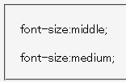

font-sizeプロパティに不正な値「middle」を指定すると、この宣言を無視せずに非常に小さい文字サイズで表示する。
<p style="font-size:middle;">font-size:middle;</p> <p style="font-size:medium;">font-size:medium;</p>
font-size:middle;
font-size:medium;
不正な値「middle」と、（標準モードでの）既定値「medium」の比較です。
N7.02での表示（標準モード）
MacIE5.0で不具合の発生が確認されています。